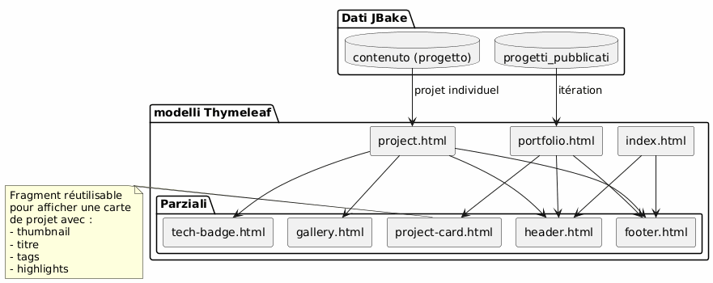
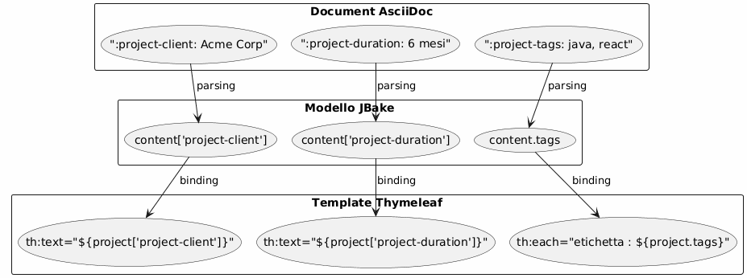
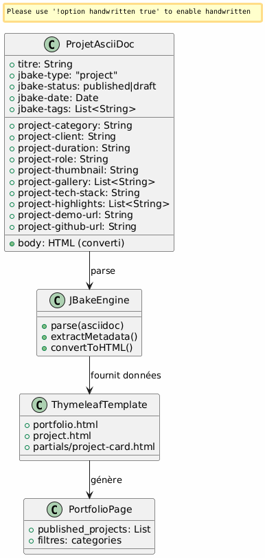
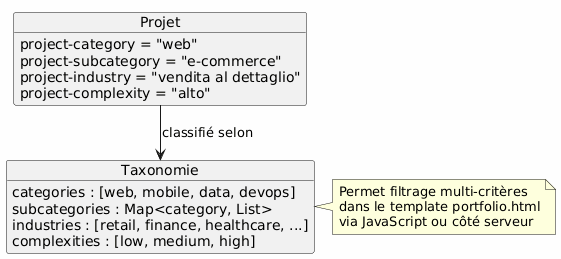

Architecture Portfolio JBake - Visione e Use Cases
Publié le 15 January 2026
Visione Architettonica
Principio direttivo
L’architettura si basa sul principio della separazione delle preoccupazioni :
-
Contenuto : file AsciiDoc strutturati con metadati ricchi
-
Presentazione : template Thymeleaf riutilizzabili
-
Dati : modello estratto automaticamente da JBake dagli attributi AsciiDoc
-
Stile : Bootstrap 5 per la coerenza visiva
Scelta strategica : AsciiDoc per il portfolio
| Criterio | Vantaggio |
|---|---|
Coerenza |
Même format que les articles de blog |
Metadati |
Attributi strutturati ed estensibili ( |
Manutenibilità |
Modifica semplice di testo, versionabile Git |
Flessibilità |
Può contenere contenuti ricchi (tabelle, codice, immagini) |
Templating |
JBake estrae automaticamente gli attributi per Thymeleaf |
Modello di dati
Ogni progetto portfolio è un documento AsciiDoc con :
-
Metadati di intestazione : informazioni strutturate (cliente, durata, tecnologie, ecc.)
-
Corpo del documento : descrizione narrativa, sfide, soluzioni, risultati
-
Attributi personalizzati : prefissati`project-*`per l’estrazione automatica
Casi d’uso dettagliati
UC1 : Aggiungere un elemento al portfolio
Flusso nominale
Failed to generate image: PlantUML preprocessing failed: [From <input> (line 4) ] @startuml skinparam backgroundColor #FEFEFE actor Développeur as dev participant "Editore\nTesto ^^^^^ Syntax Error? (Assumed diagram type: sequence) @startuml skinparam backgroundColor #FEFEFE actor Développeur as dev participant "Editore\nTesto (Testo)" as editor participant "File AsciiDoc" as file participant "JBake Engine" as jbake participant "Sito Statico" as site dev -> editor : Créer nouveau fichier activate editor editor -> file : portfolio/nouveau-projet.adoc activate file dev -> editor : Rédiger en-tête avec métadonnées\n(titre, type=project, status=published,\nattributs project-*) dev -> editor : Rédiger contenu narratif\n(contexte, défis, solutions) dev -> editor : Ajouter images dans assets/img/portfolio/ editor -> file : Sauvegarder deactivate editor dev -> jbake : Lancer build (jbake -b) activate jbake jbake -> file : Lire et parser jbake -> jbake : Extraire métadonnées jbake -> jbake : Convertir AsciiDoc → HTML jbake -> jbake : Appliquer template project.html jbake -> jbake : Ajouter à la liste portfolio.html jbake -> site : Générer pages statiques deactivate jbake dev -> site : Vérifier résultat activate site site --> dev : Afficher projet deactivate site @enduml
Modello del file da creare
Il sviluppatore crea`content/portfolio/nom-projet.adoc`con una struttura standardizzata :
-
Intestazione con tutti gli attributi richiesti
-
Sezioni standardizzate (Contesto, Sfide, Soluzioni, Risultati)
-
Nomenclatura coerente delle immagini
Punti di validazione
-
Gli attributi obbligatori sono presenti.
jbake-type,jbake-status,project-thumbnail) -
Le immagini referenziate esistono in`assets/img/portfolio/`
-
Il build JBake riesce senza errori
-
Il progetto appare nella pagina portfolio
-
La pagina individuale del progetto viene visualizzata correttamente
UC2 : Rimuovere un elemento del portfolio
Flusso nominale
Failed to generate image: PlantUML preprocessing failed: [From <input> (line 4) ] @startuml skinparam backgroundColor #FEFEFE actor Développeur as dev participant "Sistema ^^^^^ Syntax Error? (Assumed diagram type: sequence) @startuml skinparam backgroundColor #FEFEFE actor Développeur as dev participant "Sistema File" as fs participant "JBake Engine" as jbake participant "Sito\nStatico" as site database "Cache\nJBake" as cache dev -> fs : Supprimer portfolio/projet-ancien.adoc activate fs fs --> dev : Fichier supprimé deactivate fs dev -> fs : (Optionnel) Supprimer images associées\nassets/img/portfolio/projet-ancien-* activate fs fs --> dev : Images supprimées deactivate fs dev -> cache : Nettoyer cache JBake activate cache cache --> dev : Cache vidé deactivate cache dev -> jbake : Rebuild complet (jbake -b) activate jbake jbake -> jbake : Scanner content/portfolio/ jbake -> jbake : Projet absent → non généré jbake -> jbake : Régénérer portfolio.html\n(sans le projet supprimé) jbake -> site : Déployer nouveau build deactivate jbake dev -> site : Vérifier activate site site --> dev : Projet absent de la liste deactivate site @enduml
Strategia alternativa: archiviazione
Invece di eliminare definitivamente, possibilità di creare una cartella`content/portfolio/archive/`:
-
Spostare il file invece di eliminarlo
-
Consente di ripristinare facilmente
-
Mantieni la cronologia Git più chiara
Pulizia delle risorse
-
Controlla le immagini orfane in`assets/img/portfolio/`
-
Rimuovere le immagini non riferite da altri progetti
-
Pulire la cache JBake per evitare riferimenti fantasma
UC3: Mettere in bozza
flusso nominale
Failed to generate image: PlantUML preprocessing failed: [From <input> (line 4) ] @startuml skinparam backgroundColor #FEFEFE actor Développeur as dev participant "File ^^^^^ Syntax Error? (Assumed diagram type: sequence) @startuml skinparam backgroundColor #FEFEFE actor Développeur as dev participant "File AsciiDoc" as file participant "JBake Engine" as jbake participant "Sito Statico" as site dev -> file : Ouvrir portfolio/projet.adoc activate file dev -> file : Modifier attribut\n:jbake-status: published\n↓\n:jbake-status: draft file --> dev : Sauvegardé deactivate file dev -> jbake : Rebuild (jbake -b) activate jbake jbake -> file : Parser le fichier jbake -> jbake : Détecter status=draft jbake -> jbake : Exclure de published_projects jbake -> jbake : Ne pas créer page publique note right Le projet existe toujours mais n'est pas publié end note jbake -> site : Générer site (sans ce projet) deactivate jbake dev -> site : Vérifier portfolio activate site site --> dev : Projet absent de la liste publique deactivate site @enduml
Stati possibili

Casi d’utilizzo tipici
-
Progetto in corso di redazione : creare una bozza, pubblicare quando pronto
-
Progetto confidenziale temporaneo: passare in bozza finché non si ha l’accordo con il cliente
-
Aggiornamento importante : passare in draft, modificare, ripubblicare
-
A/B testing : duplicare in bozza, testare, pubblicare la versione migliore
Architettura di templating
Strategia di template riutilizzabili

Schema di estrazione dei dati
JBake converte automaticamente gli attributi AsciiDoc in proprietà accessibili in Thymeleaf :

Convenzioni di denominazione
-
Attributi progetto : prefisso`project-*` (ex:
project-client,project-tech-stack) -
File : kebab-case (es:`ecommerce-platform.adoc`)
-
Immagini : prefisso nome-progetto (es:`ecommerce-platform-thumb.jpg`)
-
Templates : nome funzionale (es:`project-card.html`,
tech-badge.html)
Workflow di pubblicazione
Pipeline di sviluppo

Ambienti
| Ambiente | Uso | Stato accettato |
|---|---|---|
Local |
Sviluppo e anteprima |
bozza, pubblicato |
allestimento |
Validazione pre-produzione |
published solo |
Produzione |
Sito pubblico |
pubblicato solo |
Estensibilità
Aggiunta di nuovi attributi
Per arricchire il modello di dati, basta semplicemente aggiungere nuovi attributi prefissati`project-*`:
-
project-awards: Premi e riconoscimenti -
project-testimonial: citazione cliente -
project-team-size: Dimensione squadra -
project-budget-range: forchetta di bilancio
Questi attributi diventano automaticamente disponibili nei modelli senza modificare il motore JBake.
Categorizzazione avanzata

Buone pratiche
Organizzazione dei file
-
Un file = un progetto : evitare di mescolare diversi progetti
-
Immagini nella cartella dedicata
assets/img/portfolio/nom-projet/ -
Nomenclatura coerente : facilita ricerca e manutenzione
-
Versioning Git : tracciamento completo delle modifiche
Gestione del contenuto
-
Stato bozza predefinito : pubblicare solo quando pronto
-
Review prima della pubblicazione : validazione qualità e riservatezza
-
Metadati completi : compilare tutti i campi pertinenti
-
contenuto narrativo ricco : non limitarsi ai metadati
Performance
-
Ottimizzare immagini : compressione prima del commit
-
Paginazione se necessaria : se >20 progetti
-
Lazy loading : immagini delle gallerie caricate su richiesta
-
Cache del browser : intestazioni appropriate per gli asset
Conclusione
Questa architettura permette :
-
Facilità d’utilizzo : aggiungere un progetto = creare un file di testo
-
Flessibilità : estensibile via nuovi attributi
-
Manutenibilità: separazione contenuto/presentazione
-
Tracciabilità : versioning Git completo
-
Automazione : build e distribuzione continua possibili
La scelta di AsciiDoc garantisce la coerenza con il resto del sito, offrendo al contempo la ricchezza dei metadati necessari a un portfolio professionale.
Articoli correlati
14 May 2026